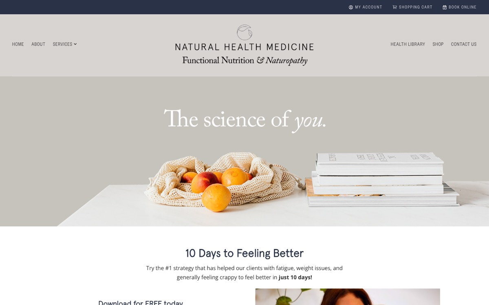
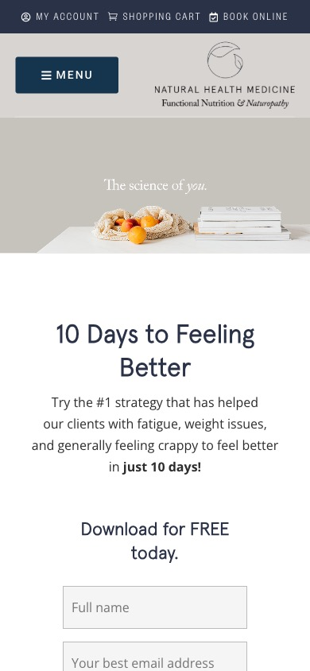
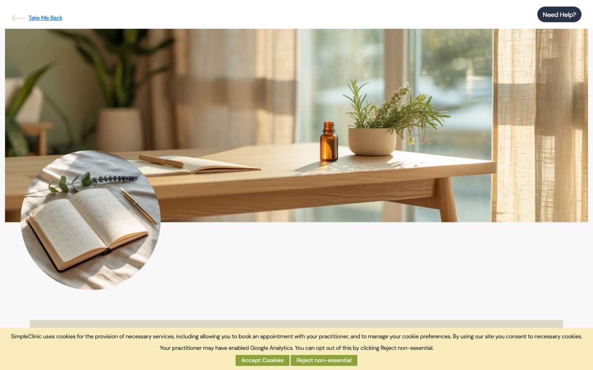
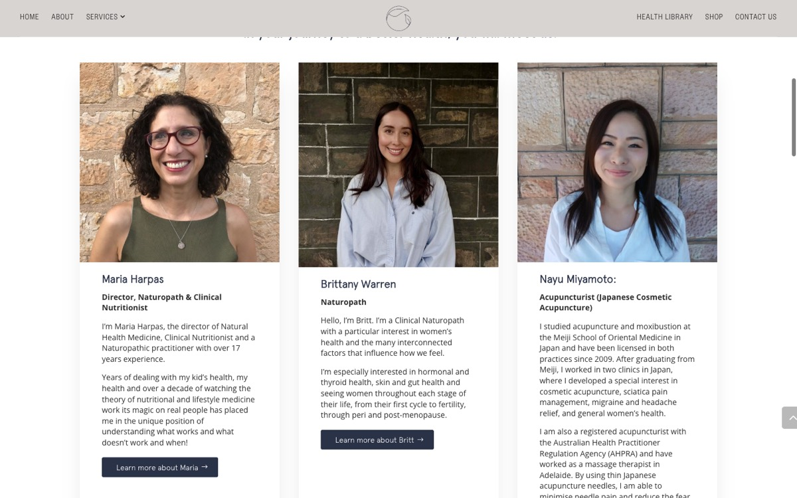
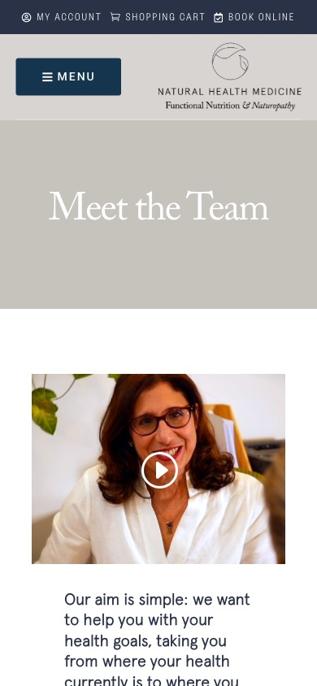
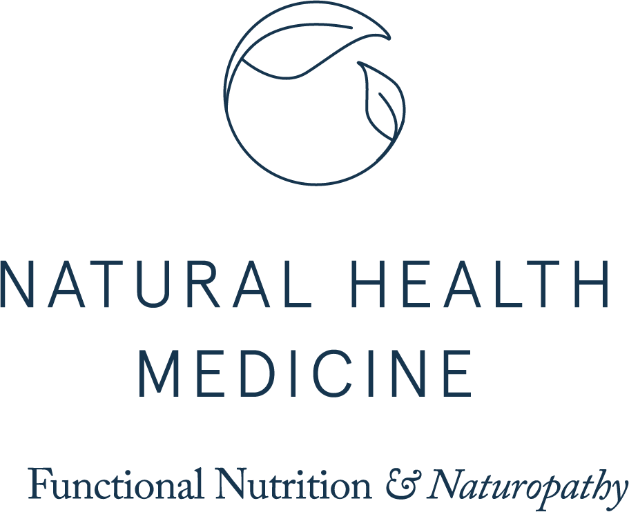

What's working, what's holding the clinic back, and what to ask of whoever builds the next site. Written in plain English, with the most important things first.
Prepared for Maria Harpas
Site checked 13/10/2026
naturalhealthmedicine.com.au
01The short version
The clinic is better than its website shows. You have an experienced team, a 4.9-star Google rating, real depth in menopause, fertility and gut health, and clear prices inside the booking system. The website hides most of that.
A new visitor can't tell what you do. The homepage opens with a photo of peaches and "The science of you." There's no mention of naturopathy, Adelaide, menopause, or a booking button.
Booking is hard to find, and some "Book" buttons go to the wrong place. Several open a practitioner's bio page instead of the booking system.
The basics patients ask about aren't there: no prices, no health-fund rebate details, and almost no mention of video consults.
It's slow on phones. The homepage scores 35 out of 100 for speed on mobile and takes about 8 seconds to show its main picture.
A few pages carry legal risk, mainly health claims on the acupuncture page and a privacy policy copied from another business. These are worth fixing now, whether or not you rebuild.
02At a glance
How each part of the site stands today.
Brand look and photosStrongCalm, premium logo and colours. Real team photos. Keep them.
Homepage first impressionUrgentDoesn't say what the clinic is, who it helps, or how to book.
BookingUrgentTiny link, five different destinations, some buttons go to bios.
Prices, rebates, telehealthMissingAll exist in the booking system but not on the website.
Trust and reviewsHiddenNo reviews or credentials on the homepage. Team page is incomplete.
Speed on phonesPoor35/100 on mobile. 6.4 MB homepage. Slow server in Canada.
Easy to readNeeds workFaint text, zoom blocked on phones, small tap targets.
Google and AI searchWeak#1 for "naturopath Eastwood", but not in the top 30 for "naturopath Adelaide".
Health advertising and privacyUrgent"Proven to treat" claims, outcome testimonials, a copied privacy policy.
03Fix these now, before any rebuild
These don't need a new website. They're small jobs on the current site or your Google listing, and they reduce real risk straight away.
Rewrite the acupuncture page.It says acupuncture is "proven to be effective in the treatment of" depression, asthma, rheumatoid arthritis, fertility issues and more. Acupuncture is a registered profession, so AHPRA's advertising rules apply, and this kind of list is exactly what they act on. Describe what a session involves and who does it instead, and have Jo and Nayu check the wording.
Replace the privacy policy.The current one is a template that names another company's website ("woofmedia.com.au"), says nothing about health information, and isn't linked from anywhere. A clinic collecting health details online needs a proper policy, linked in the footer.
Tidy your Google listing.It lists "Psychologist" as a category. That's a protected title, so remove it unless a registered psychologist works at the clinic. It also says reception is "never open on a Saturday", while your hours say 9.30 to 12.30. A separate "Sofi Bevan Naturopathy" listing uses the clinic's phone and says it closes at 2 am.
Point every "Book" button at the booking system.On the Natural Medicine, Pathology, Acupuncture and Alzheimer pages, "Book Online" opens a bio page. "Call" opens a near-empty page instead of dialling. Two blog posts have a "Make a Booking" button that leads to a dead page.
Remove links that aren't yours.The COVID page and the Medicare article contain links to a UK phone company, Amazon and an Irish pharmacy. The Dan Go article is copied in full under your name and still carries his paid links, so he earns money when your readers click. Delete or rewrite these.
Hide client-only forms from Google.The intake questionnaires, nutrition diary, members-only login and an old trial consent form all appear in Google search results.
Correct the old address.The Contact page's Google description still says "102 Portrush Rd Payneham South". It shows in search results right now.
04What the new site must get right
Nine areas, most important first. For each: what we found, and what to ask for.
1. A homepage that says who you help
Urgent

Today on a laptop: the first screen has no clinic description and no booking button.

On a phone.
What we found
The slogan "The science of you." is part of the photo, so Google can't read it. The homepage has no main heading at all.
The first real content is a free ebook offer, then a long welcome essay and six general principles.
On a phone the homepage is about 15 screens long. Services start 8,000 pixels down, and the phone number only appears at the very bottom.
"National Medicine Specialist" (meant to be "Natural") appears six times.
Ask for
A real headline on the first screen, for example: "Naturopaths and nutritionists in Eastwood, Adelaide. Menopause, hormones, fertility and gut health, in clinic or by video."
One clear "Book an appointment" button, plus "Not sure? Book a free 15-minute chat".
Then, in order: what we help with, how a first visit works (3 steps), meet Maria and the team, Google rating and reviews, free guide, location.
A real photo of you or the clinic instead of stock fruit.
2. Booking in one obvious step
Urgent

The booking page today: a large decorative photo, no clinic logo, and no practitioners until you scroll.
What we found
The only homepage booking link is a small "BOOK ONLINE" in the top bar, and it disappears once you scroll.
"Book" buttons across the site go to five different places, including bio pages and an old booking address.
New patients pick from a list of 12 names with no specialties. That list doesn't match the team page.
Your bio says to email to book, and the only thing patients can book with you online is a free menopause call.
There are at least four differently named "free call" options.
Ask for
A "Book now" button in the header that stays visible as you scroll. On phones, a fixed button at the bottom of the screen.
Every service page links straight to the right practitioner or appointment type (SimpleClinic supports direct links).
A "Not sure who to see?" option with one name and one link.
Tap-to-call phone numbers.
Separately, ask reception to tidy SimpleClinic: group appointment types, add specialties, swap the banner photo for your logo.
3. Show prices, rebates and video consults
High
What we found
"How much is it?", "Can I claim it?" and "Can I do it online?" are the first three questions new patients ask. None are answered on the website.
The answers already exist in the booking system: a first naturopath visit is $245 to $295, follow-ups $115 to $185, with Zoom available for at least five practitioners.
Local competitors publish their fees. One shows them on its homepage.
Ask for
One "Fees, rebates and telehealth" page: a simple table of first visit and follow-up, length, price, and whether health-fund rebates apply.
A line saying supplements and testing are extra.
"In clinic or by video, Australia-wide" on the homepage and every service page. This opens the clinic up to patients outside Adelaide.
4. Put the trust up front
High

The team photos are a real strength. They're just not on the homepage.

Team page on a phone.
What we found
The homepage shows no reviews, no star rating, no qualifications and no association logos.
You have 4.9 stars from 39 Google reviews. AF Health has 291 and Merridy Casson 122. Review count matters a lot for Google Maps and AI recommendations.
Cathy, Sofi and Rohan can be booked online but aren't on the team page. Some practitioners have no job title.
Your experience is given as 12, 15 and 17 years on different pages.
Margherita's bio promotes Vega testing, which has no reliable evidence behind it and undercuts the "science-based" message.
Ask for
Your photo, qualifications and memberships on the homepage.
The Google rating shown with a link to the reviews, plus a "Review us on Google" link. Ask happy patients for a review after their second visit.
A card for every practitioner with the same details: photo, title, what they help with, qualifications, association number (AHPRA number for acupuncturists), in clinic or video, rebates, and a "Book with" button.
One agreed set of facts used everywhere. "Practising since 20XX" never goes out of date.
An "As featured in" strip (Lovewell, your podcasts).
5. Fast on phones
High
Tested with Google's own speed tool on a simulated phone on mobile data. Google's target for the main picture or heading to appear is under 2.5 seconds.
Measure
Homepage, phone
Homepage, laptop
Services, phone
Speed score (out of 100)
35
64
63
Main picture or heading appears
7.8 s
3.2 s
3.1 s
Fully ready to use
14.2 s
3.3 s
10.3 s
Page jumps while loading (target under 0.1)
1.19
0.09
0.62
Page size
6.4 MB
7.0 MB
2.0 MB
Why it's slow
Photos are far too big. One is 2.4 MB but shows as a small card. Photos make up 4.5 MB of the homepage.
The server is in Vancouver and rebuilds every page from scratch for each visitor. It takes 1.5 to 1.9 seconds just to start responding.
The page builder (Divi) plus two form tools and the shop load on every page, even where they aren't used.
Six font families load on every page. The brand only needs two.
Ask for
A mobile speed score of 90+, and the main content showing in under 2.5 seconds. Ask the designer to show you the result before you pay the final invoice.
Australian hosting with page caching.
Photos resized and saved in modern formats (WebP).
Real text for headlines, never words inside a photo.
Two fonts, one form tool, and shop features only on shop pages.
6. Easy to read for everyone
Medium
Many of your patients are in the menopause and later-life age groups. Small, faint text costs you readers.
What we found
White page titles on light grey banners are almost unreadable (contrast 1.76 to 1; the minimum is 3 to 1).
Your welcome text, white on olive, is also too faint for small text.
Pinch-to-zoom is switched off on phones.
32 of 37 tappable items on the mobile homepage are smaller than a fingertip.
Most images have no description, so blind visitors and Google can't tell what they show.
Ask for
Navy text on light backgrounds, or white on navy. Use a deeper olive (#5E6B52) wherever white text sits on green.
Body text at 17 to 18 pixels, with lines no wider than about 70 characters.
Zoom allowed, and buttons at least 44 pixels tall.
A short description on every meaningful image.
A site that meets the WCAG 2.2 AA accessibility standard (designers will know this term).
7. Found on Google and in AI answers
High
What we found
You're #1 for "natural health medicine" and "naturopath Eastwood". You're not in the top 30 for "naturopath Adelaide".
For "menopause naturopath Adelaide", your signature area, only the team page shows, at #14.
Some page titles are copied from other pages. The fertility page is titled as a menopause page, and the pathology page as "eBooks & eCourses".
Google isn't told in the background that this is a local health clinic with an address, hours and practitioners.
There are no plain-English answers to common questions, which is what ChatGPT and Google's AI answers quote.
The blog has had 4 posts in the past year. Every post is credited to you, including other people's articles.
Ask for
A clear title and summary for every page, written for what people search ("Menopause Naturopath Adelaide | Natural Health Medicine").
"Local business" details set up in the background, so Google and AI tools can read them (your designer will know this as schema markup).
A short FAQ on every service page: 5 to 8 questions, each answered in 2 or 3 plain sentences.
Each article shows the real author, their qualification and a "last reviewed" date.
One useful article a month, built around questions patients actually ask.
8. Careful health wording
High
What we found
Testimonials describe health results: "saved my life", "lost over 6kg and menopause symptoms are completely gone".
Promises such as "breeze through menopause symptom-free" and "balanced hormones".
"Alzheimer Treatment" and "Reversing Cognitive Decline", and two clinic web addresses that forward to Tim's own business.
Menomize is sold in the shop without saying you're behind it. A review on menomize.com is signed "Vicky Harpas". If that's a family member, it should come down.
Ask for
Testimonials about the experience ("I felt listened to") instead of outcomes. None on acupuncture or product pages.
"Support" and "help you understand" instead of "treat", "cure" or "symptom-free".
Rename the cognitive service, for example "Brain health and cognitive risk", working alongside the patient's GP. Make it clear who patients book with.
One honest line on the menopause page: "Maria co-founded Menomize. We'll only suggest it if it suits you."
Someone familiar with health advertising rules reads the new copy before launch.
9. Clear out the old, carefully
Medium
What we found
96 pages and 230 posts. Naturopathy is covered on four separate pages, nutrition on four, Alzheimer's on two.
Leftovers: a COVID policy linked from every page, old webinar and thank-you pages, a test product, and a page showing broken code.
About 75% of the Health Library is from 2021 or earlier, and about 60 posts are recipes.
Ask for
One page per service, with the old addresses forwarded to it.
Move across only the best 20 to 30 articles, updated and properly credited. Keep recipes in their own section.
Shop as one menu link, not three icons in the header.
Don't lose your shop traffic. Most of the people who find the site on Google land on shop product pages, not clinic pages. In the top 40 searches that bring visitors, 25 go to /shop/ pages (for example "atrantil" at #1 and "perfect aminos" at #3). If the new site drops the shop or changes those addresses without forwarding them, that traffic disappears overnight. Whoever builds the site should list every current address and forward each one to its closest new page. Decide early whether the shop stays.
05What's working, keep it
Your brandThe leaf logo, Caslon lettering, navy and olive feel calm and premium. Carry them across, don't replace them.
Team photographyConsistent, warm and real. Better than most clinic sites. Just show it earlier and bigger.
Your voice and storyYour lived experience of menopause is a genuine point of difference.
Clear programsHow To Do Menopause and How to Master Fertility say what's included. Tim's page is a model for transparent pricing and FAQs.
Strong local base#1 for the clinic name and "naturopath Eastwood", with a 4.9-star rating.
Good content to draw onThe Vitamin B6 article (15 proper references), the Alzheimer page's research, your video, podcasts and the Lovewell interviews.
Practical detailsClear hours, parking via Moar Street, a map, and the same address and phone in every footer.
Solid foundationsSecure address, a working sitemap, spam-protected forms and up-to-date core software.
06Your brand kit
Hand this to your designer. The colours come from your logo files, which are the true reference. The current site has drifted into four slightly different navies and three olives, so the new site should use just these.
Navy#16354E Headings, main buttons, footer
Olive#788971 Accents, icons, large headings
Deep olive#5E6B52 Whenever white text sits on green
Greige#D8D4D1 Background panels
Warm white#FAF9F6 Page background
Charcoal#2D2D2D Body text
Adobe Caslon Pro
Headings. It matches the "Functional Nutrition & Naturopathy" line in your logo. Libre Caslon (free) is a close match.
Apercu
Body text and buttons. The site also loads four other fonts that can go. Check you hold web licences for Apercu and Caslon before reusing them.

One ask: find the original logo design files (an SVG, AI or EPS file) from whoever designed it in 2021. The website only has small picture versions, and the leaf icon on its own is too small to use for anything bigger than a browser tab icon.
07Suggested page list
A simpler structure, built around what patients come in for.
Main menu
Home
What we help with
Menopause and perimenopause
Fertility and preconception
Women's hormones, thyroid and PCOS
Gut health (IBS, SIBO, food intolerance)
Fatigue, sleep and stress
Brain health and cognitive risk
Services
Naturopathy and clinical nutrition
Pathology testing and results
Acupuncture
Remedial massage
Counselling
Our team (one page per practitioner)
Fees, rebates and telehealth
Health Library
Shop
Contact and location
Book now (button, every page)
Footer and secondary
Your first visit: how it works, what to bring, FAQ
Free 15-minute "find the right practitioner" call
Free guides
Working with your GP
Media and podcasts
Privacy policy, terms, shipping and returns
Leave behind
COVID policy page
Duplicate naturopathy and nutrition pages (forward them)
Old webinar and thank-you pages
The copied Dan Go and guest infertility posts
Juice Cleanse as a "service"
Empty "Book Maria" page and the shop test product
08What local competitors do better
The clinics that came up above you for "naturopath Adelaide" and "menopause naturopath Adelaide".
Clinic
Google reviews
What they do well
AF Health
4.9 (291)
Shows review count and awards on the homepage. Book button in every section, plus a free 15-minute call. A fees and rebates page. Every practitioner's degree and association in one line.
Merridy Casson
4.9 (122)
Clear "Adelaide Naturopath & Nutritionist" heading. A page per condition, and #1 for "menopause naturopath Adelaide". A homepage FAQ in plain sentences.
Adelaide Naturopathic
n/a
Prices on the homepage. States qualifications up front. "In clinic or telehealth Australia-wide" in its Google description.
Solace Health
n/a
Same booking system as you, but with one clear "Free Intro Call" button and a single women's health focus.
Natural Health Medicine
4.9 (39)
Same rating, a bigger team and deeper programs, but less of it is visible.
09Briefing a web designer
A checklist to take into conversations with designers. Anyone you're considering should be comfortable with every point.
Have ready
Original logo files and font licences
This review, and the page list above
One agreed set of facts: years in practice, address, hours, team, services
A current photo of you and the team
Fees, rebates and telehealth details per practitioner
SimpleClinic direct booking links for each practitioner and service
Logins for your domain, hosting and Google Business Profile
A decision on whether the shop stays
Ask them
Will you forward every old web address to a new page, including all shop products?
What mobile speed score will you hit, and will you show me before final payment?
Will it meet the WCAG 2.2 AA accessibility standard?
Will you set up local business details for Google, and a title and summary for every page?
Can I edit text, photos and add articles myself, without breaking the layout?
Where is it hosted, and what does hosting and upkeep cost each year?
Who checks the health wording against advertising rules before launch?
Who owns the site and the logins when you're finished? (It should be you.)